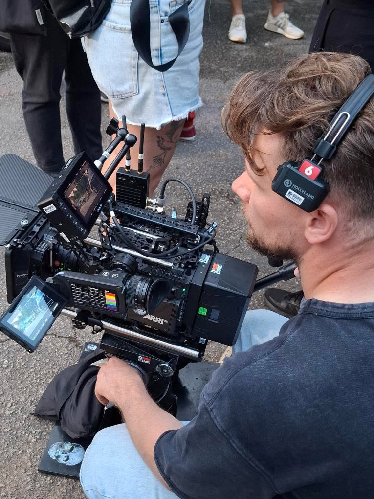
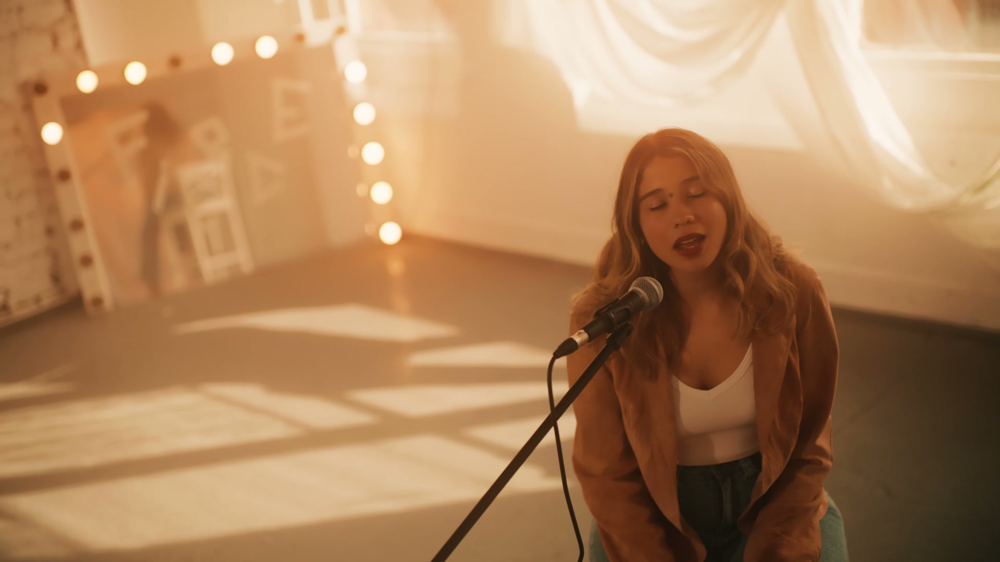

Hire me for cinematography or camera work
Bring me into your production as a DOP or camera operator. I also offer Steadicam and gimbal operation, working with your director and production team on the look, lighting and movement the project needs.
Films for brands, artists and performances. Camera expertise when you need an individual. A production team when the project calls for more.
I’m Jacek Snochowski, a Dublin-based cinematographer, director of photography and camera operator. I work on commercials, branded films, music videos, documentaries and live performances, with larger productions delivered through FruitFrame.

You might already have a director and crew, or you might need help putting a production together. Here are the two ways to work with me.
Bring me into your production as a DOP or camera operator. I also offer Steadicam and gimbal operation, working with your director and production team on the look, lighting and movement the project needs.
For projects needing more people and wider production support, I co-run FruitFrame. Tell us what you want to make, your schedule and the scope, and we can discuss the team and support required.
I also co-run Fade Street Studios in Dublin, giving us a studio option when your production needs a location. It’s where we filmed Lilliane’s Fatal Attraction, featured below.
If a studio would suit your project, we can discuss the space and availability as part of planning the shoot.
Cinematography and filming for brands, agencies and production companies. From an individual camera role to a larger production through FruitFrame, the setup depends on the brief.
Visual storytelling for artists, with performance and camera movement at the centre. My background in dance informs how I approach rhythm, timing and choreography on camera.
Filming people, interviews and creative processes. My documentary work includes following the development of a theatre production over a year, then bringing that footage together in the edit.
Coverage for theatre, dance showcases, performances and events. We offer multi-camera filming, live switching between camera angles and livestreaming, with a production team for larger events.
These projects show different approaches to filming, from cinematic acoustic performances to documentary storytelling and multi-camera coverage.

Acoustic music video
A warm, cinematic performance filmed at Fade Street Studios, combining window backlight with soft lighting. I directed, shot, edited and colour-graded the film, with gaffer Nikita Kushch-Shevalov supporting the lighting.
Watch the film and explore the lighting
Documentary
A theatre project followed over a year. I directed, filmed and edited the documentary, bringing rehearsals, performances and interviews into one story.
Watch Monsters and explore the project
Performance coverage
My portfolio includes live directing on a multi-camera project for Taaffe College. Read how multiple camera angles can support a dance-showcase film.
Read about multi-camera showcase coverageNo. I’m based in Dublin and work across Ireland and internationally. Include your location when you get in touch.
Yes. You can hire me as a cinematographer, DOP or camera operator, including Steadicam and gimbal work, as part of your existing team.
I have directed, filmed, edited and colour-graded projects such as Live Your Life. Tell me which stages you need help with so we can agree what is included.
There isn’t one price for every project. The shoot length, locations, crew, equipment and editing requirements all affect the scope. Send your brief and budget range so we can discuss a suitable approach.
Send me the idea, filming location, preferred dates, deadline and a rough budget. If you’re unsure whether you need a videographer, a DOP or a full production team, explain what you want to achieve and we can work from there.